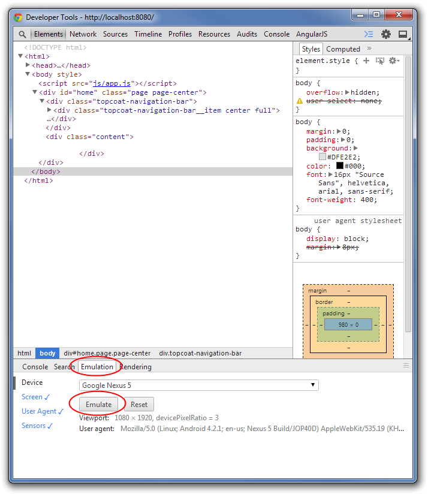
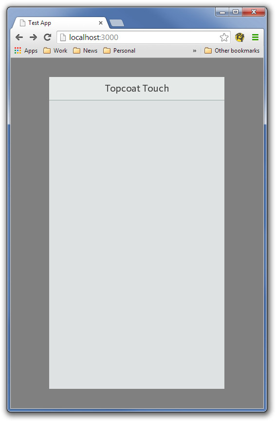
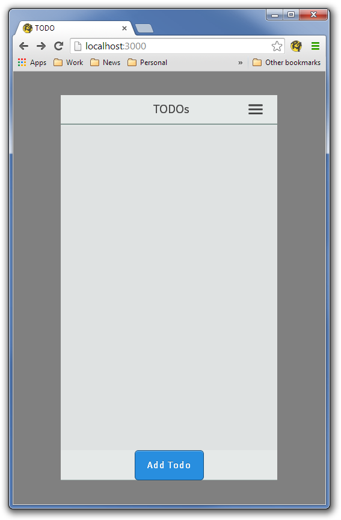
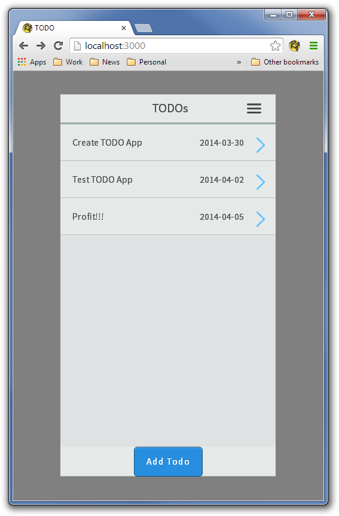

<div class="row">
    <div class="col-sm-12">
        <h1>TODO Single Page</h1>

        <h3>Who is this tutorial for?</h3>

        <div class="tutorialItem">
            TopcoatTouch is designed to be a very simple mobile development kit, that said you should be
            familiar with HTML, CSS, and Javascript and should feel fairly comfortable with jQuery.
        </div>

        <h3>What is to be achieved</h3>

        <div class="tutorialItem">
            What we are going to build is a simple TODO App (of course), that utilizes the simplest way of creating
            TopcoatTouch apps the Single Page model.  The single page model is similar to the default model in <a href="http://jqtjs.com/">jQT</a>
            (formally jqTouch) and also jQuery mobile.  You create the application by placing all of the UI in a single
            HTML document (hence the name), and showing pages of that single document through CSS and a tiny bit of
            javascript.  It allows the very rapid creation of apps, however it is not recommended for large applications
            for both performance and code clarity reasons. But for a TODO app it will do quite nicely.
        </div>

        <div class="tutorialItem">
            We are going to create our application skeleton with <a href="http://yeoman.io">Yeoman</a> and are going to
            make it an actual application that we can load on a phone with <a href="http://phonegap.com">Phonegap</a>.

            Enough of what is to be achieved, lets get started!
        </div>

        <h3>Dependencies, dependencies, dependencies...</h3>

        <div class="tutorialItem">
            Before we get started we are going to need to install some of the tools that TopcoatTouch uses.  The
            <a href="started.html">Getting Started</a> guide can help, but we will kind of blast through it here.

            <ol class="tutorialList">
                <li>Install node.js.  Go to the <a href="http://nodejs.org/">node.js</a> website and click
                install.  You may have a little more work to do if you are on Linux or want to install the
                Homebrew or Macports edition, but if you are comfortable you should be comfortable installing
                NodeJs on those platforms.  Make sure NPM is installed as well.</li>

                <li>Install the android development platform (if you are comfortable with Phonegap then
                feel free to use any platform you want, we are going to use the Android because it is
                available on all platforms).  The android development platform can be found
                <a href="http://developer.android.com/sdk/index.html">here</a>.  if you are going to use
                an emulator (rather than use an android phone for testing) I would I recommend that you install
                the Haxm accelerator for the emulator, see the
                <a href="http://software.intel.com/en-us/android/articles/intel-hardware-accelerated-execution-manager">install guide</a>,
                as it will provide a much better development experience and lesson the chance of you pulling your hair
                out waiting for emulator to respond.  The other possibility is to use <a href="http://www.genymotion.com/">Genymotion</a>
                as an emulator, however I have had issues with Genymotion and Phonegap in the past (graphical glitches) so YMMV.
                </li>

                <li>Install phonegap/cordova npm module (this may take a while, so be prepared to get a coffee or something).  This is as simple
                as:
                <code class="language-bash">$ npm install -g cordova</code>
                Here is a good time to go get a fresh cup of jo, catch up on your email, etc.  If you want to use the
                <a href="https://build.phonegap.com/">Phonegap build</a> capabilities (and have Adobe do all of the hard
                work maintaining build servers, etc, install the phonegap CLI instead of the cordova CLI.  We are going to use
                the Cordova CLI here, but feel free to swap the cordova commands for phonegap commands.
                </li>

                <li>Install <a href="http://yeoman.io">Yeoman</a>, and the
                <a href="https://github.com/kriserickson/generator-topcoat-touch">topcoat touch generator</a>.

                First install the yeoman command line tool (called yo).

                <code class="language-bash">$ npm install -g yo</code>

                Note: If you are using npm 1.2.10 or above, this will also automatically install grunt and bower for you.
                If you're on an older version of npm, you will need to install them manually:

                <code class="language-bash"># For npm versions < 1.2.10.
$ npm install -g grunt-cli bower</code>

                Next install the topcoat-touch genreator for yeoman

                <code class="language-bash">$ npm install -g generator-topcoat-touch</code>
                </li>

            </ol>
        </div>

        <h3>Scaffolding.</h3>

        <div class="tutorialItem">Hopefully your computer is now setup, if you had any problems installing the dependencies remember Google
            and <a href="http://stackoverflow.com">stackoverflow</a> are your friends.  Next we create the scaffolding (and here we will
            be thankful for the goodness that is Yeoman.  Go to your projects directory, and create a directory called "topcoattouch-todo" and
            open a console in that directory.  Next type <code class="noblock">yo topcoat-touch</code>:

            <code class="language-yeoman"><span class="token property">$yo</span> topcoat-touch

     _-----_
    |       |
    |<span class="yeoman-red">--(o)--</span>|   .--------------------------.
   `---------'  |    <span class="yeoman-yellow">Welcome to Yeoman,</span>    |
    <span class="yeoman-brown">(</span> _<span class="yeoman-brown">'U`</span>_ <span class="yeoman-brown">)</span>   |   <span class="yeoman-brown">ladies and gentlemen!</span>  |
    /___A___\   '__________________________'
     <span class="yeoman-brown">|  ~  |</span>
   __<span class="yeoman-brown">'.___.'</span>__
 '   <span class="yeoman-red">`  |</span>° <span class="yeoman-red">' Y</span> `
[<span class="yeoman-green">?</span>] Topcoat Touch Project Name?
                </code>

        When asked for project name, you are going to enter <code class="noblock">TODO</code>:

<code class="language-yeoman">[<span class="yeoman-green">?</span>] Topcoat Touch Project Name? <span class="yeoman-blue">TODO</span>
[<span class="yeoman-green">?</span>] Would you like to enable Cordova for this project? (Y/n)</code>

        You do want enable Cordova for this project, so hit Y or just press return as it is the default.

<code class="language-yeoman">[<span class="yeoman-green">?</span>] Would you like to enable Cordova for this project? <span class="yeoman-blue">Yes</span>
[<span class="yeoman-green">?</span>] Cordova platforms: (Press &lt;space&gt;  to select)
&gt;[<span class="yeoman-green">X</span>] ios
 [<span class="yeoman-green">X</span>] android
 [ ] wp8
 [ ] windows8
 [ ] amazon-fireos
 [ ] firefoxos
 [ ] blackberry10</code>

        For now (unless you are comfortable with multiple platforms and the Cordova CLI) lets unselect IOS by hitting SPACE, and then pressing return.

<code class="language-yeoman">[<span class="yeoman-green">?</span>] Cordova platforms: <span class="yeoman-blue">android</span>
[<span class="yeoman-green">?</span>] Light or dark theme? (Use arrow keys)
<span class="yeoman-blue">&gt; light</span>
  dark</code>

        Up to you to decide which theme, we are going to use the Light so if you want your output to match ours, choose light.

<code class="language-yeoman">[<span class="yeoman-green">?</span>] Light or dark theme? <span class="yeoman-blue">light</span>
[<span class="yeoman-green">?</span>] Use jQuery or Zepto as Dom manipulation library? (Use arrow keys)
<span class="yeoman-blue">&gt; jquery</span>
  zepto</code>

        We are going to use jQuery just to keep things simple.

<code class="language-yeoman">[<span class="yeoman-green">?</span>] Use jQuery or Zepto as Dom manipulation library? <span class="yeoman-blue">jquery</span>
[<span class="yeoman-green">?</span>] Include Hammer.js for gesture support? (Y/n)</code>

        We are going to delete our TODO's with a swipe, so we will want Hammer.js installed.

<code class="language-yeoman">[<span class="yeoman-green">?</span>] Include Hammer.js for gesture support? <span class="yeoman-blue">Yes</span>
[<span class="yeoman-green">?</span>] Include fastclick.js to remove click delays? (Y/n)</code>

        We are going to include Fastclick because we don't want to be annoyed by the 300ms mobile click delay.

<code class="language-yeoman">[<span class="yeoman-green">?</span>] Include fastclick.js to remove click delays? <span class="yeoman-blue">Yes</span>
[<span class="yeoman-green">?</span>] Include IScroll.js for scrolling (required for KitchenSink demo)? (Y/n)</code>

        We are going to want to scroll our thousands of todo's so yes, lets add IScroll.js as well.

<code class="language-yeoman">[<span class="yeoman-green">?</span>] Include IScroll.js for scrolling (required for KitchenSink demo)? <span class="yeoman-blue">Yes</span>
[<span class="yeoman-green">?</span>] MVC or Single Document? (Use arrow keys)
<span class="yeoman-blue">&gt; mvc</span>
  single document
</code>

        Since this is the Single Document tutorial pick Single Document.

<code class="language-yeoman">[<span class="yeoman-green">?</span>] MVC or Single Document? <span class="yeoman-blue">single document</span>
[<span class="yeoman-green">?</span>] Include the KitchenSink demo? (y/N)</code>

        Hit N or press return to skip including the KitchenSink demo.  Here is another time to Take-A-Break, as bower and npm install can
        take a while...

<code class="language-yeoman">[<span class="yeoman-green">?</span>] Include the KitchenSink demo? <span class="yeoman-blue">No</span>
   <span class="yeoman-green">create</span> app\index.html
   <span class="yeoman-green">create</span> app\js\app.js
   <span class="yeoman-green">create</span> app\css\app.css
   <span class="yeoman-green">create</span> bower.json
   <span class="yeoman-green">create</span> .bowerrc
   <span class="yeoman-green">create</span> Gruntfile.js
   <span class="yeoman-green">create</span> package.json
   <span class="yeoman-green">create</span> app\cordova.js
   <span class="yeoman-green">create</span> app\templates\home.ejs

I'm all done. Running <span class="yeoman-yellow">bower install &amp; npm install</span> for you to install the required dependencies.
If this fails, try running the command yourself.</code>
        </div>

        <h3>Actual Code</h3>

        <div class="tutorialItem">
            Well, now we have a scaffold.  Let's take a look at what we actually have.  Go back to your console window and type:

            <code class="language-bash">    $grunt
Running "http-server:dev" (http-server) task
Server running on  127.0.0.1:3000
Hit CTRL-C to stop the server</code>
        </div>

        <div class="tutorialItem">You can now point your web-browser at http://localhost:3000, although you wont see much.   Now for a bit of
        a digression, debugging your application.  There are several ways to debug mobile applications</div>
        <ul>
            <li><strong>Using an actual device pointed at your desktop computer</strong> This will give the most accurate representation, however
            unless you are on a very modern version of Android (4.4) or IOS 6+ the debugging situation is very painful and is really more of a
            console.log situation than anything (use <a href="http://people.apache.org/~pmuellr/weinre/docs/latest/">Weinre</a> and
            <a href="http://debug.phonegap.com">Phonegap Debug</a> if you absolutely have to debug in that situation.  To debug on Android 4.4
            see <a href="https://developers.google.com/chrome-developer-tools/docs/remote-debugging">Remote Debugging Chrome on Android</a>,
            See <a href="https://developer.apple.com/library/mac/documentation/AppleApplications/Conceptual/Safari_Developer_Guide/GettingStarted/GettingStarted.html">Safari Web Inspector Guide</a>
            and search for Safari on iOS to see how to debug on IOS.
            </li>
            <li><strong>Use a emulator and use the browser in that</strong>  Using the iOS simulator on a Mac, or using the latest Android SDK
            and installing Chrome you can debug with the above techniques</li>
            <li><strong>Just using a browser and resizing it to be mobile device size.</strong> This will give an approximation of what it is like to run
            your application on a mobile device, however be aware you are not getting the same events and the differences between desktop browsers
            and mobile browsers can vary greatly.   It does give you one of the best debugging experiences and allow you to work in a debugger that you
            are most familiar with.</li>
            <li><strong>Use a browser emulator</strong> This can be found in Chrome Developer Tools (see image below).  There are other options for this,
            the <a href="http://ripple.incubator.apache.org/">ripple</a> emulator may be working again at some point.  The old version is still available
            in the <a href="https://chrome.google.com/webstore/detail/ripple-emulator-beta/geelfhphabnejjhdalkjhgipohgpdnoc">Chrome Webstore</a>, however
            it is of limited use now.   Some people like the <a href="http://www.electricplum.com/studio.aspx">Electric Plum</a> iOS emulator, although
            I found it pretty dated looking.  Opera has emulation to some extent (probably getting better every release, since they are using the Chrome Dev Tools)
            as well as there <a href="http://www.opera.com/developer/mobile-emulator">Opera Mobile Classic Emulator</a>.
            </li>
        </ul>

        <div class="imageHolder">
            
        </div>

        <div class="tutorialItem">Personally I would recommend going with the Chrome Developer Tools (and all of the screenshots from the rest of this
            tutorial will be based on that).

            If you want to follow along with development of the application, feel free to check out the GitHub project
            <a href="https://github.com/kriserickson/topcoat-touch-todo">topcoat-touch-todo</a>.  Right now we are at the tag
            <a href="https://github.com/kriserickson/topcoat-touch-todo/tree/stage-0">stage-0</a>.


            So after all of our preparation and scaffolding, what do we have?</div>

        <div class="imageHolder">
            
        </div>

        <div class="tutorialItem">Not a lot.  We basically a title, and not even the right title.Let's change that, set up the framework for our TODO's
        and add a Add Todo Button.  Add the replace the current <code class="noblock">&lt;div id="home"&gt;</code> in index.html with the following:
      
            <code class="language-markup">&lt;div id="home"&gt;
    &lt;div class="topcoat-navigation-bar"&gt;
        &lt;div class="topcoat-navigation-bar__item left quarter"&gt;&lt;/div&gt;
        &lt;div class="topcoat-navigation-bar__item center half"&gt;
            &lt;h1 class="topcoat-navigation-bar__title"&gt;TODOs&lt;/h1&gt;
        &lt;/div&gt;
        &lt;div class="topcoat-navigation-bar__item right quarter"&gt;
            &lt;a class="topcoat-icon-button--quiet menu-button" href="#"&gt;
                &lt;span class="topcoat-icon topcoat-icon--menu-stack"&gt;&lt;/span&gt;
            &lt;/a&gt;
        &lt;/div&gt;
    &lt;/div&gt;
    &lt;div class="content scrollable"&gt;
        &lt;div class="topcoat-list__container"&gt;
            &lt;ul id="todoList" class="topcoat-list list"&gt;

            &lt;/ul&gt;
        &lt;/div&gt;
    &lt;/div&gt;
    &lt;div class="topcoat-bottom-bar"&gt;
        &lt;div class="topcoat-bottom-bar-item full center"&gt;
            &lt;button class="topcoat-button--cta" id="addButton"&gt;Add Todo&lt;/button&gt;
        &lt;/div&gt;
    &lt;/div&gt;
&lt;/div&gt;</code>

        After pasting the above code in, we should have something a little closer to what we want.
        </div>

        <div class="imageHolder">
            
        </div>

        <div class="tutorialItem">Now lets quickly add some javascript to show some simulated TODO's. Add the following between
        <code class="noblock">var tt = new TopcoatTouch();</code> and <code class="noblock">tt.goTo('home');</code> in app.js.
        </div>

        <code class="language-javascript">function ToDo(name, details, dateDue, complete) {
    this.name = name;
    this.details = details;
    this.dateDue = function() {
        return dateDue.getFullYear() + '-' + (Array(2).join(0) +  dateDue.getMonth()).slice(-2) + '-' +
            (Array(2).join(0) +  dateDue.getDate()).slice(-2);
    };
    this.complete = !!complete;
}

// First page we go to home...  This could be done in code by setting the class to 'page page-center', but here is how to do it in code...
var todos = [new ToDo('Create TODO App', '', new Date(2014,3,30)),
    new ToDo('Test TODO App', '', new Date(2014,4,2)),
    new ToDo('Profit!!!', '', new Date(2014,4,5))
];

var todoList = '';

$.each(todos, function(key, todo) {
    todoList += '&lt;li class="topcoat-list__item" data-rel="todoView"&gt;' +
        '&lt;span class="toDoName two-thirds"&gt;' + todo.name + '&lt;/span&gt;' +
        '&lt;span class="toDoDate"&gt;' + todo.dateDue() + '&lt;/span&gt;' +
        '&lt;span class="chevron"&gt;&lt;/span&gt;&lt;/li&gt;';
});

$('#todoList').html(todoList);</code>

        <div class="tutorialItem">Now we are getting somewhere, this is actually starting to look a bit like an app: </div>

        <div class="imageHolder">
            
        </div>

        <div class="tutorialItem">Before we break for today, lets look over what we have added.  First the html:</div>

        <code class="language-markup">&lt;div id="home"&gt;
&lt;div class="topcoat-navigation-bar"&gt;
    &lt;div class="topcoat-navigation-bar__item left quarter"&gt;&lt;/div&gt;
    &lt;div class="topcoat-navigation-bar__item center half"&gt;
        &lt;h1 class="topcoat-navigation-bar__title"&gt;TODOs&lt;/h1&gt;
    &lt;/div&gt;
    &lt;div class="topcoat-navigation-bar__item right quarter"&gt;
        &lt;a class="topcoat-icon-button--quiet menu-button" href="#"&gt;
            &lt;span class="topcoat-icon topcoat-icon--menu-stack"&gt;&lt;/span&gt;
        &lt;/a&gt;
    &lt;/div&gt;
&lt;/div&gt;</code>

        <div class="tutorialItem">We have added a div to the document, and that div with an id of "home" is going to be our
        page, you can add multiple div's to the root of the page and each div will be a page.  Page's can have an optional
        <code class="noblock">data-rel="page"</code> to make it clear that they are a page.  The next section is the navigation bar,
        which is basically plain <a href="http://topcoat.io">topcoat</a>.  Check out the topcoat documentation, and topcoat examples
        for more information about navigation bars, and the center, right, left, quater, half and whole classes.  The only way
        we are diverging is we have added menu-button class to the right button, this will be used to show and trigger a menu later
        on in the project.</div>

        <code class="language-markup">&lt;div class="content scrollable"&gt;
    &lt;div class="topcoat-list__container"&gt;
        &lt;ul id="todoList" class="topcoat-list list"&gt;

        &lt;/ul&gt;
    &lt;/div&gt;
&lt;/div&gt;</code>

        <div class="tutorialItem">Next we create the main content, we set it as scrollable because we know that at some point
        we are going to have so many ToDo's that we will need to scroll them (as an exercise you should try to generate a
        bunch of random ToDo's in the app.js and make sure that the app scrolls like it should).  We have created a list to
        hold our ToDo's which we will be populating in Javascript.  The bottom bar is pretty self explanatory so lets jump to the javascript:
        </div>

         <code class="language-javascript">function ToDo(name, details, dateDue, complete) {
    this.name = name;
    this.details = details;
    this.dateDue = function() {
        return dateDue.getFullYear() + '-' + (Array(2).join(0) +  dateDue.getMonth()).slice(-2) + '-' +
            (Array(2).join(0) +  dateDue.getDate()).slice(-2);
    };
    this.complete = !!complete;
}</code>

        <div class="tutorialItem">We have created a very simple ToDo class.  You don't need to use classes in TopcoatTouch,
        it is missing all concept of a model, so feel free to plug-in backbone or any class system you want.  In fact this
        particular class is pretty bad as we can't change the dueDate ever and it isn't very serializable.  But it will do
        for a quick demo, and we will be improving it and moving all of the ToDo service to a seperate module later in the tutorial.
            </div>

        <code class="language-javascript">var todos = [new ToDo('Create TODO App', '', new Date(2014,3,30)),
    new ToDo('Test TODO App', '', new Date(2014,4,2)),
    new ToDo('Profit!!!', '', new Date(2014,4,5))
];
    </code>
    
        <div class="tutorialItem">Next we create a small, and very simple array of ToDo's.  Obviously in the future we are
        going to have a way of storing them locally, and adding ToDo's.  For now it is good enough to generate a few sample items. 
        </div>
    
    <code class="language-javascript">var todoList = '';

$.each(todos, function(key, todo) {
    todoList += '&lt;li class="topcoat-list__item" data-rel="todoView"&gt;' +
        '&lt;span class="toDoName two-thirds"&gt;' + todo.name + '&lt;/span&gt;' +
        '&lt;span class="toDoDate"&gt;' + todo.dateDue() + '&lt;/span&gt;' +
        '&lt;span class="chevron"&gt;&lt;/span&gt;&lt;/li&gt;';
});

$('#todoList').html(todoList);</code>
    
        <div class="tutorialItem">In our final bit of code we create the actual todo list.  We do this by simply building
        up HTML in the todoList variable, relying on jQueries each to iterate over all of toDo items.  Then we manually
        insert the html we have generated into the todoList.
        </div>

        <div class="tutorialItem">If you are following along on GitHub, we are not at the tag <a href="https://github.com/kriserickson/topcoat-touch-todo/tree/stage-1">stage-1</a>.
            Please feel to add issues to either the todo project or the main topcoat project if you have suggestions
            on how these tutorials could be improved in any way.
        </div>

    <h3>Coming Up</h3>

    <div class="tutorialItem">In the next part we will add the ability to Add ToDo's, and View them.</div>


    </div>

</div>